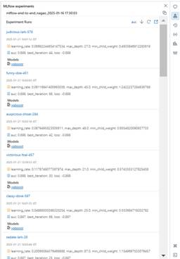
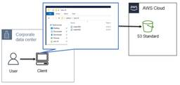
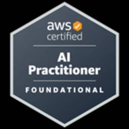
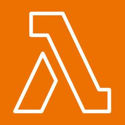
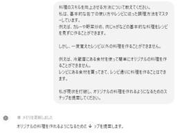

APC 技術ブログ
https://techblog.ap-com.co.jp/
株式会社エーピーコミュニケーションズの技術ブログです。
フィード

MLflow & Hyperopt を活用したDatabricks上での機械学習効率化②（Batch Inference＜バッチ推論＞まで）
APC 技術ブログ
はじめに GLB事業部Lakehouse部の長尾です。 本ブログ（と前編）では、Databricks社の Training machine learning models on tabular data: an end-to-end example (Unity Catalog) を参照して（2025年1月16日時点）、MLflow & Hyperoptを活用したDatabricks上で機械学習を効率化させるための実装方法について紹介します。 ひとつのパターンとして本ブログでの一連の実行の流れを覚えておけると他のケースでも応用できるのではないかと考えています。 ※本ブログは上記参照先の内容の翻…
1日前
MLflow & Hyperopt を活用したDatabricks上での機械学習効率化①（ベースラインモデルの訓練まで）
APC 技術ブログ
はじめに GLB事業部Lakehouse部の長尾です。 本ブログ（と後編）では、Databricks社の Training machine learning models on tabular data: an end-to-end example (Unity Catalog) を参照して（2025年1月16日時点）、MLflow & Hyperoptを活用したDatabricks上で機械学習を効率化させるための実装・管理方法について紹介します。 ひとつのパターンとして本ブログでの一連の実行の流れを覚えておけると他のケースでも応用できるのではないかと考えています。 ※本ブログは上記参照先の内…
1日前

Backstage: Cookiecutter で世界中で公開されているテンプレートを活用しよう
APC 技術ブログ
はじめに こんにちは。ACS事業部 亀崎です。 今回はBackstage x Cookiecutterで公開テンプレートを活用しよう、というお話です。 先日BackstageのTemplate機能の基本的な内容についてご紹介させていただきました。 techblog.ap-com.co.jp Template機能は出来上がってしまえばコード等の再利用を加速する便利な機能ですが、まずテンプレートそのものを作らないといけない、というところが課題の１つです。 そこで登場するのがCookiecutterです。 Cookiecutterとは CookiecutterはPython等のプロジェクトの雛形（テ…
1日前

【OCI】Object-storageをエクスプローラで利用してみる
APC 技術ブログ
目次 目次 はじめに ゴール 検証プラン やってみる 1. WinSCPダウンロード 2. OCIにコンパートメントとポリシー、グループ、ユーザーを作成 3. OCI Object-storageを作成 4. 顧客秘密キーを作成 5. WinSCP接続パラメータの確認 6. WinSCPの新しい接続を作成 7. 接続してみる まとめ おわりに はじめに こんにちは、株式会社エーピーコミュニケーションズ クラウド事業部の松尾です。 本記事ではOCI Object-storageをブラウザ経由ではなくエクスプローラーとして使えるようにしていきます。使うツールはいくつかありますが、今回はWinSCP…
3日前
Backstage 基礎: TechDocs機能
APC 技術ブログ
はじめに こんにちは。ACS事業部 亀崎です。 以前、Backstageの基本機能である「Software Catalog」をご紹介しましたが、今回はそうした情報に関するドキュメントを共有する機能であるTechDocsをご紹介します。 techblog.ap-com.co.jp TechDocs機能 PlaTT/Backstageの基本的なコンセプトは組織内における開発コンポーネント情報（および実行リソース情報）の共有財産化です。それぞれのチームが開発・利用するコンポーネントの情報をできる限り公開することで、チームのサイロ化・や重複開発を抑止しつつ必要な情報をチーム内およびチーム間で共有するも…
4日前

AWS Certified AI Practitioner (AIF-C01)合格記
APC 技術ブログ
目次 目次 はじめに 受験前の知識レベル 学習期間 学習の流れ 学習のポイント 参考 さいごに おわりに はじめに こんにちは、エーピーコミュニケーションズの松尾です。 本記事ではAWS Certified AI Practitioner (AIF-C01)試験の学習内容を紹介したいと思います。この学習内容で合格できています。 受験前の知識レベル 2024 Japan AWS All Certifications EngineersでAWSサービス全般の知識あり 実務でAWSは触っているがAI関連のサービスは使っていない 学習期間 平日1時間ずつ、約2週間 学習の流れ 他のAWS試験と同様にこ…
5日前

【AWS DEA】S3 Object Lambdaを試してみる
APC 技術ブログ
こんにちは！クラウド事業部の中根です。 AWS DEAの学習中にS3 Object Lambdaというものを初めて知り、試してみました。AWS DEA学習中の方の参考になれば幸いです。
6日前
フロントエンド × Lambda × S3/EFS を使ったDB構成パターン比較
APC 技術ブログ
はじめに こんにちは、クラウド事業部の丸山です。 Single Page Applicationの様にフロントエンド（ブラウザ）だけで完結するバックエンドレスの開発手法を検討する際、切っても切れない関係としてDBが挙げられます。 設計段階でDBを利用しないものとすることで回避は可能ですが、少しだけDB的な機能を使いたいけどコストはかけたくない様なシチュエーションは往々にしてあるため、いつも頭を悩ませてしまいます。 SPAの最大のメリットとしては、コスト削減が挙げられると考えており、不要なバックエンドは極力削りたいところですが、以下の様なDB的な要素が必要な場合、どうしてもサーバーサイドをある程…
6日前

レシピに頼らず料理を作る力を鍛える – ChatGPTで学ぶ料理の基本と応用
APC 技術ブログ
冷蔵庫の食材から自由に料理を作れるようになるには、レシピに頼らず調理の基本を理解することが大切です。本記事では、ChatGPTを活用して料理の応用力を高める方法を探り、基本の構造や味付けのバリエーションを学ぶ過程を紹介します。レシピを見ずに料理ができるようになりたい方におすすめの内容です。
8日前

【CrowdStrike】FalconConsole徹底解説 その１
APC 技術ブログ
2025年は12回に渡ってCrowdStrikeの主に利用者の立場で役に立つ情報をお伝えする連載をスタートします。テーマは「CrowdStrike徹底解説」です。今回はFalconConsoleのダッシュボードとアラート画面についてご紹介します。
9日前
【AWS初心者向け】AWSアカウントを作成した直後にやるべきこと
APC 技術ブログ
img{ display: inline-block; box-sizing: border-box; border: solid 1px #333; } 目次 目次 はじめに どんな人に読んでほしいか なぜセキュリティとコスト管理が大事なのか？ セキュリティ設定 MFA（多要素認証）の有効化 IAMユーザーの作成と設定 コスト管理設定 予算設定とアラートの活用 無料枠の確認と通知方法 無料枠の確認 AWS 無料利用枠アラートの設定 まとめ お知らせ はじめに こんにちは！クラウド事業部の早房です。今回は、 AWS アカウントを作成した後にまずは最低限やるべき設定を紹介します。 以前 AWS …
10日前
参加レポート ～SRE Kaigi 2025に行ってきた！(実質Part3)
APC 技術ブログ
はじめに 1/26（日）にSRE Kaigi 2025に参加してきました！ 2025.srekaigi.net とても活気にあふれていて楽しく、学びがあったので備忘録を兼ねてレポートしたいと思います。 イベント概要 SRE Kaigi 2025のコンセプトを引用すると、 SRE Kaigi 2025は、「More SRE !」をテーマに開催される、SREを中心として知見の共有と参加者との交流を楽しむ技術カンファレンスです。 SREは世界的に注目され続けている領域であり、現場によって抱える課題や取り組みはそれぞれ異なります。 そうした多様な事例から得られた知見を共有する場は、まだまだ不足している…
12日前
最小権限設定の第一歩！IAMアクセスアドバイザー！
APC 技術ブログ
IAMの「最小権限の原則」が大事なのは知っていても、ハードルが高く感じませんか？そんなIAMの最小権限実現を、手軽に始められる機能を発見したのでご紹介します。
13日前
SRE Kaigi 2025に参加してきました！！【登壇スライドまとめあり】
APC 技術ブログ
はじめに SRE Kaigi 2025とは？ 参加してみた感想 参加のモチベーション どんな企画やブース出展があったか セッションの感想 特に気になったセッションについて Platform EngineeringがあればSREはいらない!? 新時代のSREに求められる役割とは あなたの興味は信頼性？それとも生産性？ SREとしてのキャリアに悩むみなさまに伝えたい選択肢 登壇資料について Re:Define 可用性を支える モニタリング、パフォーマンス最適化、そしてセキュリティ Site Reliability Engineering on Kubernetes SRE、開発、QAが協業して挑ん…
13日前
EC2 リザーブドインスタンスについてまとめてみた
APC 技術ブログ
はじめに どんなひとに読んで欲しい リザーブドインスタンス（RI）とは 期間 料金の支払い方法 EC2 RIのタイプ スコープについて 割引について 購入手順 躓いた箇所 おわりに お知らせ はじめに こんにちは、クラウド事業部の山下です。 以前AWSのSavings Plansについてブログにまとめました。 techblog.ap-com.co.jp AWSのコストを削減する方法には、上記Savings Plansのほかにリザーブドインスタンス（RI）という料金モデルもあります。 RIについても知識として概要は把握していたものの、実際に活用したことがありませんでした。 現在関わっている業務に…
13日前
参加レポート ～SRE Kaigi 2025に行ってきた！
APC 技術ブログ
はじめに ★2025/1/28追記★ 「SRE Kaigi 2025」イベント概要 参加の動機 参加レポ 現地到着！！ セッションが熱かった！ 屋台も熱かった！ ブースをめぐる 参加したセッション まとめ 学びと感想 おわりに はじめに こんにちは、ACS事業部の小原です。 SRE Kaigi 2025に参加してきました。早速、現地で感じたことをお伝えしていきます！ ★2025/1/28追記★ 同じチームの参加レポートも続々と公開されています。ぜひご覧ください。 詳細な感想など、とても充実した内容になっています。 techblog.ap-com.co.jp techblog.ap-com.co…
13日前
Backstage 基礎: Software Template
APC 技術ブログ
はじめに こんにちは。ACS事業部 亀崎です。 前回の「Software Catalog」に引き続き、今回も Backstage の基本機能の１つ、Software Template をご紹介したいと思います。 techblog.ap-com.co.jp Software Template Software Template機能の基本的な機能は、あらかじめ用意したフォルダ、ファイル一式（テンプレート）を、新しいGitリポジトリとして作成・コピーする、またはテンプレートフォルダ・ファイル一式の追加するPull Requestを作成する機能です。 テンプレートからコピーする際、何も変更を加えずその…
14日前
Backstageに入門してみよう：1_Backstageの環境準備とインストール
APC 技術ブログ
はじめに Backstageとは？ このブログのゴール 前提条件 環境構築 コマンドラインで利用可能なGNUライクなビルド環境 Node.js Active LTS リリースのインストール nvm とは Node.js Active LTS リリースとは 【手順】nvm & Node 20 のインストール Yarn について Yarn と Corepack について Backstage のインストール 【手順】Backstageのインストールと開発モードでの起動 おわりに ACS事業部のご紹介 はじめに こんにちは。ACS事業部の青木です。 私たちACS事業部では、メインの業務の一つとしてPl…
15日前
【CUR2.0×OpenCost】AWSコストの可視化をする方法
APC 技術ブログ
はじめに Athenaテーブルの設定 1. CUR2.0の設定 2. Athenaテーブルの作成 3. OpenCost用のAthenaテーブル作成 OpenCostの構築 1. クラスタへの接続 2. Prometheusの設定 3. OpenCost用のIAMロールの作成 4. OpenCostのインストール 3. コストデータ取得の確認 終わりに はじめに こんにちは！クラウド事業部の中根です。 OpenCostでAWSのコストを可視化する際に苦戦しました。 レガシーCURを使用する場合は問題ないですが、CUR2.0を使用する場合は、一工夫必要でした。 設定方法をご紹介します。 また、K…
16日前
SIerのEngineering Managerが自社のエンジニアリング組織を語ってみる
APC 技術ブログ
はじめに 弊社の組織 私のチームと、私の組織の考え さいごに はじめに こんにちは！ ACS事業部Cloud InfrastractureチームでEngineering Managerをしている谷合です。 弊社エーピーコミュニケーションズは、SIerとしてSRE支援、Platform Engineering支援などを通して日々皆様のお困りごとの支援を行っています。 みなさんSIerはいいイメージをお持ちでしょうか？ 人月商売 上流工程だけで技術が伸びない PowerPointやExcelなどが主なツール 最新技術を使う機会がない 上記のようなイメージではないでしょうか？ そんなSIerの弊社で…
16日前
Backstage 基礎: Software Catalog機能
APC 技術ブログ
はじめに こんにちは。ACS事業部 亀崎です。 私たちは オープンソースのInternal Developer Portal であるBackstageをマネージド・サービスとして提供しています。 www.ap-com.co.jp 2024年から次第に Internal Developer PortalおよびBackstage が注目されてきていると感じているのですが、まだまだどういったものなのかをご存知ない方もいらっしゃるかと思います。 そこで、これから数回にわけてその基本機能についてご紹介していきたいと思います。今回はその第１回目、テーマはSoftware Catalogです。 Softwa…
17日前
【AWS Glue】CUR2.0のAthena統合を設定する方法
APC 技術ブログ
CUR2.0はレガシーCURと違って、Athena統合を自分で行う必要があります。設定方法についてご紹介します。
18日前
Professional Scrum Master I (PSM I) の合格記
APC 技術ブログ
目次 目次 はじめに 受験前の知識レベル 学習期間 学習の流れ 受験 カバー範囲 勉強になったことまたは苦労したこと 参考 さいごに はじめに GDAI事業部Lakehouse部のメイです。 本記事では Professional Scrum Master I (PSM I) 試験の学習内容を紹介したいと思います。 受験前の知識レベル 大学でWaterfall, Agile, DSDM（Dynamic systems development method）について勉強した Software Engineer としてのWaterfall, Agileでの開発経験 学習期間 約2週間 学習の流れ １…
18日前
OCI最初に知ることシリーズ3【リージョンと可用性ドメイン】
APC 技術ブログ
目次 目次 はじめに 本記事の対象者 リージョンとは 可用性ドメインとは 参考情報 まとめ おわりに はじめに こんにちは、株式会社エーピーコミュニケーションズの松尾です。 今回はOracle Cloud Infrastructure（以下、OCI）の”リージョン”と”可用性ドメイン”を紹介していきます。 これからOCIを始める方向けに概要をお伝えしていきます。 本記事はOCI最初にやることシリーズ、第三弾です。 過去の記事はこちら。 techblog.ap-com.co.jp techblog.ap-com.co.jp 本記事の対象者 OCIの学習をこれから始める方 OCIのリージョンの考え…
18日前
AWSコンソールで複数アカウントの同時サインインが可能に
APC 技術ブログ
はじめに こんにちは。エーピーコミュニケーションズ クラウド事業部の髙野です。 先日、AWSのマネジメントコンソールでマルチセッションサポート機能が追加されました。 マルチセッションがサポートされたことにより、異なるアカウント間の管理作業が格段に効率化されます。 会社のアカウントなどではセキュリティの観点からマルチセッションサポートの有効化を試せない方もいらっしゃるかと思いますので、本記事では実際にマルチセッションサポートを有効化する様子を画像付きで紹介していきたいと思います。 aws.amazon.com 目次 アップデート概要 検証 まとめ お知らせ アップデート概要 マルチセッションがサ…
18日前
【CUR2.0】AWSコストをAthenaで分析する方法
APC 技術ブログ
はじめに こんにちは！クラウド事業部の中根です。 FinOpsの一環で、CUR2.0の設定とAthenaでの分析方法を調査しました。 設定方法を簡単にご紹介します。 CUR 2.0の設定 「請求とコスト管理」から、「データエクスポート」の画面に遷移し、「作成」を押下してください。 フォームを入力していきます。 エクスポートタイプ： 標準データエクスポート エクスポート名： 任意 データテーブルコンテンツ設定： CUR 2.0 その他のエクスポートコンテンツ： 任意(ストレージコストがそこまで気にならなければ有効がおすすめ) 残りはデフォルトでOKです。 CUR 2.0の大きな改善点として、列選…
20日前
Managed Backstage 「PlaTT」でRBAC（Permission）機能に対応しました
APC 技術ブログ
PlaTT でRBAC（Permission）をサポート こんにちは。ACS事業部亀崎です。弊社から2024年夏にManaged Backstage「PlaTT」を発表させていただきました。 techblog.ap-com.co.jp そしてこのたび PlaTT にPermission機能を導入いたしました。 https://www.ap-com.co.jp/pressrelease/post-11668 www.ap-com.co.jp Backstageはとても便利なOSSの開発者ポータルなのですが、その維持管理はとても面倒です。 さらに、各種データのアクセス制御を行うPermission…
25日前
Resource Explorerで無駄なコスト削減！
APC 技術ブログ
はじめに Resource Explorerとは 具体的な使い方 設定方法 1. Resource Explorer有効化 2. 常駐リソースにタグ付け 3. デフォルトのリソースにタグ付け 4. クエリの作成 5. ビューの作成 6. 動作確認 注意点 終わりに はじめに こんにちは！クラウド事業部の中根です。 個人利用のAWSで色々試した後のリソース削除、大変ですよね。 実は残ってるんじゃないかと不安になったり、消したつもりが残っていたり、といった経験は誰もがあるのではないでしょうか。 BudgetsのレポートやCost Explorerなどを使用する方も多いかもしれませんが、基本的に次の…
1ヶ月前
AWS Certified Data Engineer Associate（DEA）合格記
APC 技術ブログ
目次 目次 はじめに 受験前の知識レベル 学習期間 学習の流れ 受験 参考 さいごに おわりに はじめに こんにちは、エーピーコミュニケーションズの松尾です。 本記事ではAWS Certified Data Engineer Associate（DEA-C01）試験の学習内容を紹介したいと思います。 受験前の知識レベル 2024 Japan AWS All Certifications EngineersでAWSサービス全般の知識あり 実務でAWSは触っているがデータ関連のサービスは使っていない 学習期間 平日1時間ずつ、約2週間 学習の流れ 他のAWS試験と同様にこの流れで進めていきました。…
1ヶ月前